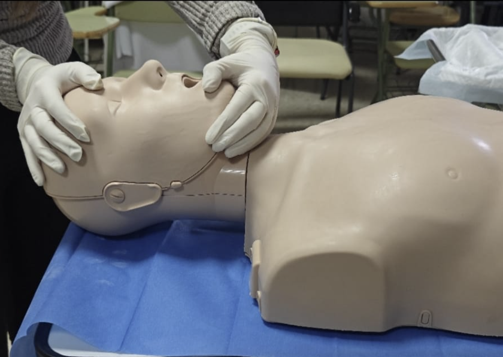
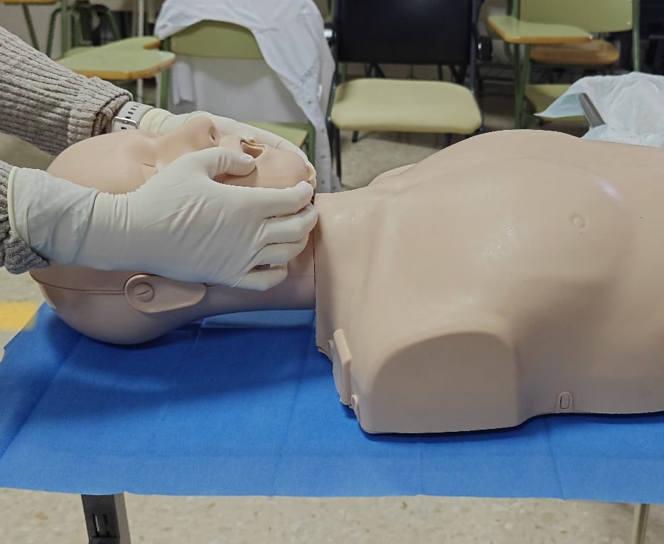

Valoración inicial en emergencias
Valoración Inicial de la Víctima (VOS)
- Ver si la persona responde o tiene movimientos.
- Oír si hay sonidos respiratorios normales.
- Sentir la respiración acercando la mejilla y observando el movimiento torácico.
Si la persona no responde ni respira con normalidad, llamar a emergencias y comenzar RCP.
Números clave en la Activación de los Servicios de Emergencia
- 112: Número general de emergencias en Europa.
- 061: Emergencias sanitarias (Andalucía).
- 91 562 04 20: Servicio de Información Toxicológica
Qué decir al llamar a emergencias:
- Ubicación exacta del incidente.
- Estado de la víctima.
- Medidas que se han tomado.
- No colgar hasta que el operador lo indique.
Apertura de la vía aérea: Maniobra Frente-Mentón
Para realizar la maniobra Frente-Mentón tenemos que hacer lo siguiente:
- Colocar a la víctima en posición de decúbito supino.
- Una mano en la frente, otra en el mentón.
- Inclinar la cabeza hacia atrás y elevar el mentón suavemente.

Apertura de la vía aérea: Maniobra de tracción mandibular
Se utiliza si hay sospecha de traumatismo cervical.
- Colocar a la víctima en posición de decúbito supino.
- Arrodíllate al frente de la cabeza del paciente.
- Coloca tus dedos detrás de los ángulos de la mandíbula y muévala hacia arriba.
- Use los pulgares para ayudar a colocar la mandíbula en forma tal que permita la respiración a través de la boca y la nariz.
- La maniobra completada debe abrir la vía aérea con la boca ligeramente abierta y la mandíbula proyectada hacia adelante

Posición lateral de seguridad (PLS)
Se utiliza en una persona inconsciente pero que respira de manera estable. Su objetivo es mantener la vía aérea abierta y evitar la asfixia por vómito o fluidos.
- Asegurar la seguridad del entorno antes de mover a la persona.
- Colocar el brazo más cercano en ángulo recto con la palma hacia arriba.
- Doblar la pierna opuesta a la altura de la rodilla.
- Cruzar el brazo opuesto sobre el pecho, colocando la mano bajo la mejilla.
- Girar a la persona hacia un lado, usando la pierna doblada como apoyo.